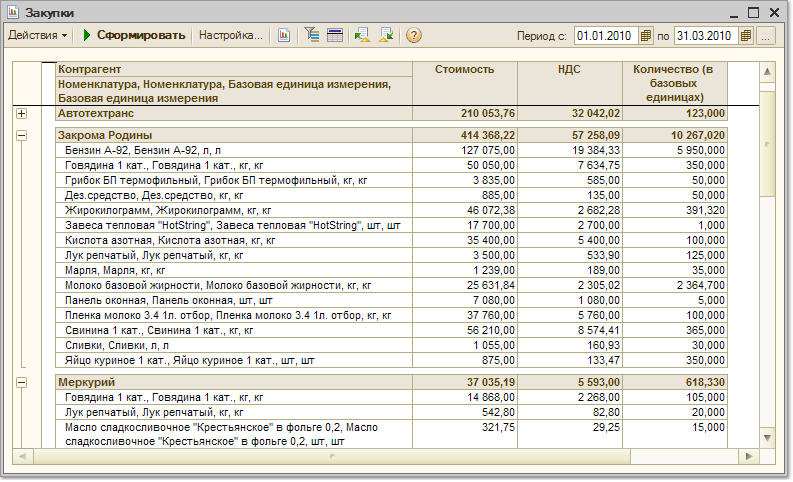

По кнопке "Настройка" вызывается форма настройки параметров отчета:

Показатели
В отчете выводится количество купленных товаров, НДС и сумма покупки. Стоимостные характеристики выводятся в валюте управленческого учета.
Количественные характеристики могут быть выведены в базовых единицах измерения, в единицах хранения остатков или в единицах отчета.
Группировки строк и колонок
Отчет может быть сгруппирован по контрагентам, договорам, сделкам, а также по номенклатурным позициям. Можно детализировать отчет до уровня документа закупки.
Данные в отчете могут быть сгруппированы по свойствам контрагентов (например для анализа закупок в различных регионах), а также по свойствам товаров (для укрупненного анализа товаров определенного вида, товаров основного производителя и т.д).
Можно произвести и более детальный анализ продаж в разрезе характеристик и серий товаров.
Отчет может быть выведен по предприятию в целом или по каждому подразделению предприятия.
Кроме того, для сравнения закупок в различных периодах можно сгруппировать отчет по дням, неделям, месяцам, кварталам, годам.

Отборы
Данные отчета могут быть отфильтрованы по условиям, заданным в блоке "Отборы".
Чтобы добавить вид отбора, щелкните кнопку "Добавить" и выберите поле, по которому будет производиться отбор. Затем задайте Тип сравнения, который определит область поиска заданного значения. Значение отбора выбирается из соответствующего справочника. Значением отбора может быть как отдельный элемент, так и группа и список выбранных элементов.
Вид отбора активен, только если в строке вида отбора установлен флаг.